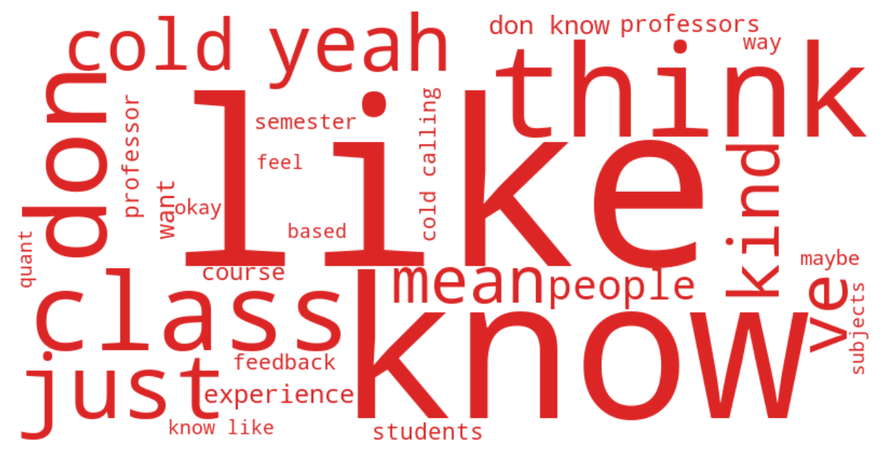

MCMPA Focus Group
85 student turns · Mean sentiment: 0.48
85
Student turns
6109
Total words
0.48
Mean sentiment
Sentiment Arc
Emotional trajectory through the MCMPA focus group session. Hover over points to read actual quotes.
Distinctive Vocabulary

Top Themes
Cold Calling
"I dropped a class because of cold calling. The class that I really waited for, because the professor was doing cold calling in such a way that it was the whole essence of the class."
Academic Rigor: Expectations Met and Unmet
"So the way of teaching is very different from what we have back home. It's more liberal and democratic in terms of how the class is conducted. And the openness of it, I think that's very positive."
Feedback & Assessment: Timing, Quality, and Accountability
"I had two classes last semester that I didn't get a single grade back the entire semester. I got A's in both the classes."
Reading Volume & Workload Sustainability
"There are some professors where it's 400 pages of readings for one class, and you're like, okay, well, what is the point of this?"
Student Professionalism & Classroom Culture
"I think the professors are quite engaging. But oftentimes there's one or two people who take up the entirety of the class. In 75 percent of my classes, I've experienced this."
Core Curriculum: Structure, Flexibility, and Program Identity
"I found the skill-based courses very effective, and I find it a bit problematic when I have to bid, like, all my points for, like, a writing class. I didn't take any writing class because I just canno..."
Norm Enforcement & the Rules Gap
"I think the spoken rules always sound super reasonable and legitimate. But behind those external rules, there are also implied rules that everyone understands what they are, but no one mentions them..."
Teaching Quality & Faculty Investment
"My experience with my professors here has been deeply inspiring. No matter whatever priorities they had, they treated me, their students, as their top priority."
Participation Grades vs. Class Size: A Structural Tension
"i i generally agree and and and share your perspective in that sense but i also feel that sometimes um i'm trying to to find like a more like that sometimes uh class discussions are like simulacra of ..."
Faculty Accessibility & Office Hours
"Accessibility towards students should be a core performance metric for teachers. It's unacceptable that there are some professors who are saying, I only have one office hour a week for a class of 60 s..."
Distinctive Keywords
like
know
think
don
class
just
yeah
cold
ve
kind
mean
people
experience
don know
want
professors
course
professor
students
semester